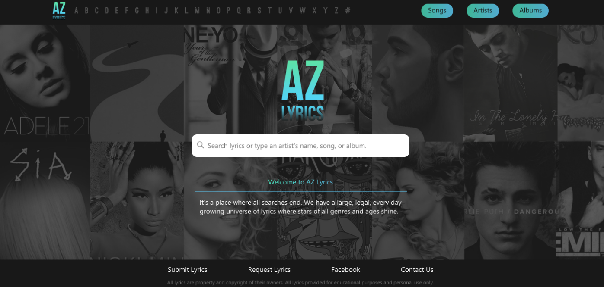
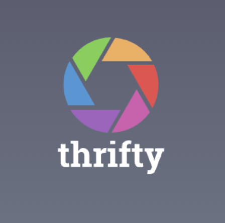
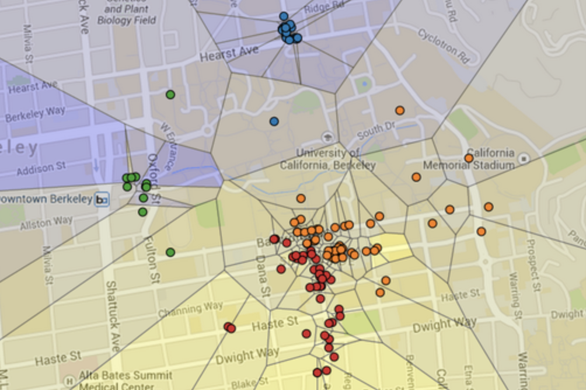
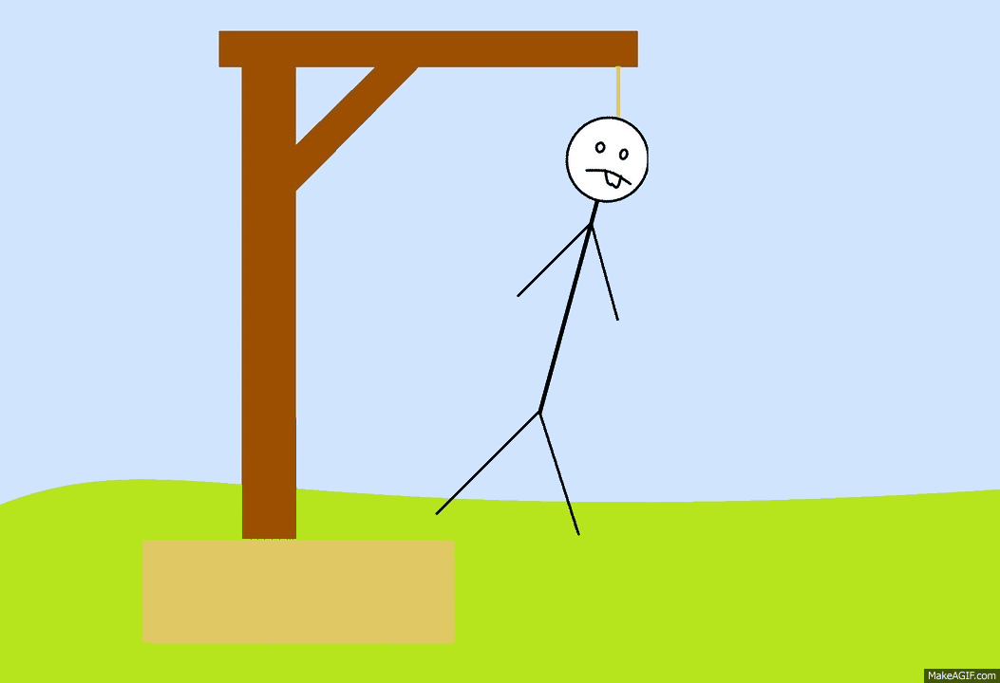

Projects




x
AZ LYRICS REDESIGN
HTML, CSS, Adobe XD
AZ Lyrics is an old website which provides
its users lyrics to many
songs. However, the website’s UI/UX seems to be pretty
standard and plain HTML. Using Adobe XD, my group and I
were able to make high-fidelity prototypes to redesign four of its
pages. Implementing theories on color, typography and
spacing, we were able to redesign the pages that provides
better visuals.
songs. However, the website’s UI/UX seems to be pretty
standard and plain HTML. Using Adobe XD, my group and I
were able to make high-fidelity prototypes to redesign four of its
pages. Implementing theories on color, typography and
spacing, we were able to redesign the pages that provides
better visuals.
x
THRIFTY
Sketch, Swift, XCode
Thrifty is a custom iOS application that
can track a user’s
expenses. Using Sketch, my partner and I created a prototype of
the flow and UX/UI of the app. The prototype was translated
using Xcode’s storyboard for UI and Swift for its functionalities.
For more information on the product:
expenses. Using Sketch, my partner and I created a prototype of
the flow and UX/UI of the app. The prototype was translated
using Xcode’s storyboard for UI and Swift for its functionalities.
For more information on the product:
x
MAPS
Python
Using Python, we created a visualization of
restaurant ratings
using machine learning, a growing field at the intersection of
computer science and statistics that analyzes data to find
patterns and make predictions, and the Yelp Academic Dataset.
The scope of the dataset is within the Berkeley, California region.
using machine learning, a growing field at the intersection of
computer science and statistics that analyzes data to find
patterns and make predictions, and the Yelp Academic Dataset.
The scope of the dataset is within the Berkeley, California region.
x
SNAPCHAT 2.0
XCode, Swift
The goal of the project is to
create and design
a replica of the famous multimedia messaging app, Snapchat that
allows users to take photos and send it to their friends.
This project used Firebase, a mobile and web
app development platform as its local database for
storing user's information. In addition, this project
used both programmatic and UI/UX design.
a replica of the famous multimedia messaging app, Snapchat that
allows users to take photos and send it to their friends.
This project used Firebase, a mobile and web
app development platform as its local database for
storing user's information. In addition, this project
used both programmatic and UI/UX design.
x
HANGMAN
XCode, Swift
The goal of the project is to create and
design a
replica of a famous game called Hangman. Using
the Model-View-Controller framework, Swift and XCode, I
was able to design the User Interface of the iOS game
, implement functions that will generate a random
phrase, provide the progress of the user by updating the
"hangman" and the letters that were guessed, and many more
that will allow you to either in or lose the game.
replica of a famous game called Hangman. Using
the Model-View-Controller framework, Swift and XCode, I
was able to design the User Interface of the iOS game
, implement functions that will generate a random
phrase, provide the progress of the user by updating the
"hangman" and the letters that were guessed, and many more
that will allow you to either in or lose the game.